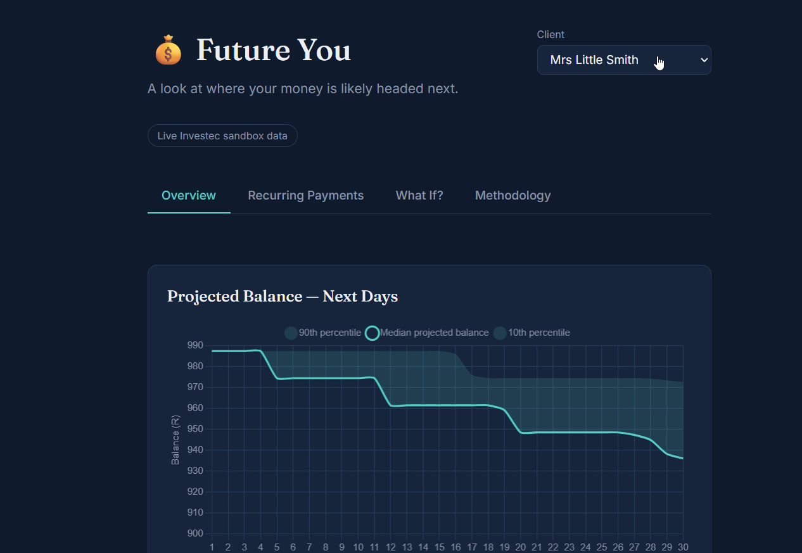
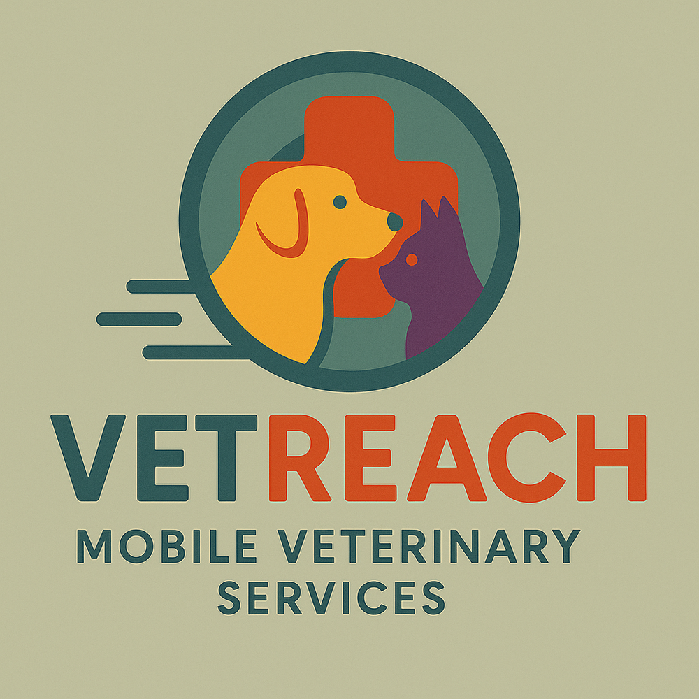
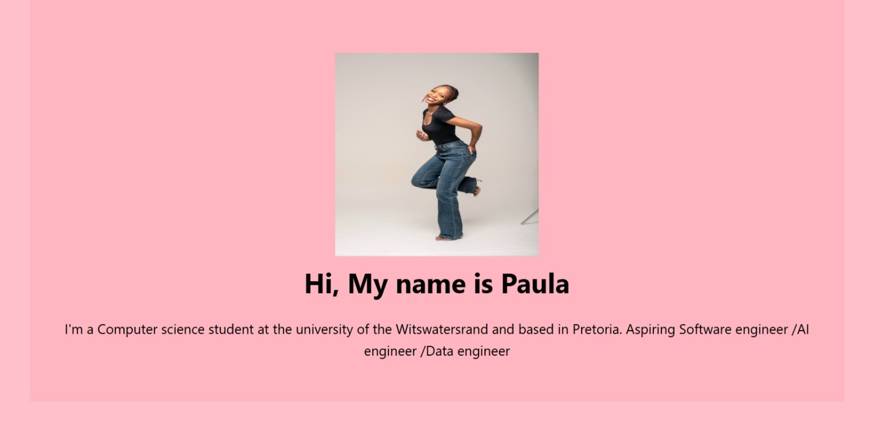

I'm a second year Computer science student at the university of the Witswatersrand and based in Pretoria. Aspiring Software engineer/AI engineer and later branch in data science
MY WORK
Here are some of the projects I've built and contributed to using software development and data analysis.

Developed a financial forecasting application integrating Investec APIs to analyse account transactions and project future balances. Built Flask backend endpoints for account data, financial forecasts and what-if scenarios.

Contributed to a platform supporting livestock healthcare in Limpopo. Focused on backend logic, PostgreSQL database integration and connecting the recommendation system to the frontend.

Designed and developed a personal portfolio website to showcase my projects, technical skills, certifications and professional journey. Acquired skils from Wits Developer Society Tuesday workshops.
Issued: June 2026
Skills: Machine Learning, AI, Cloud Computing
View CertificateIssued: April 2026
Skills: AI literacy and Prompting and AI-powered workflows
View CertificateDuration: from 13th to 19th September 2026
Description: I participated in a hackathon where I collaborated with a team to develop VetReach, a platform aimed at improving access to veterinary services for livestock farmers in Limpopo. I contributed to the backend logic, PostgreSQL database integration, and connecting the recommendation system to the frontend. This experience strengthened my problem-solving, teamwork, and software development skills while allowing me to apply my knowledge to a real-world challenge.
View CertificatePlatform: Forage
Date: June 2026
Completed a virtual job simulation focused on data analytics and forensic technology, gaining practical experience through real-world business tasks.
Skills: Data Analysis, Forensic Technology, Problem Solving
View Certificate